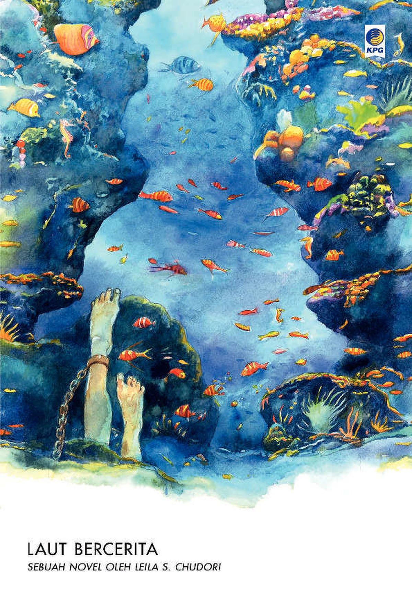

Daftar Buku
| Judul | Penulis | Tahun Terbit | Status Baca |
|---|---|---|---|
| Laut bercerita | Leila S. Chudori | 2017 | Sudah dibaca |
| Cantik Itu Luka | Eka Kurniawan | 2002 | Sudah dibaca |
| Yang Telah Lama Pergi | Tere Liye | 2021 | Sedang dibaca |


Tambah Buku
Tentang Saya
Halo, saya Syahla Nadia Khoirunnisa. Saya suka membaca novel. Halaman ini saya buat untuk mencatat koleksi buku pribadi Saya